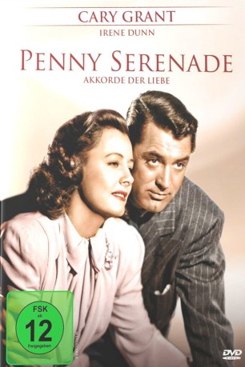

#7419 Akkorde der Liebe
Alternativ: Penny Serenade
Auszeichnungen: für 1 Oscars nominiert
 
 IMDB-Wertung: 7.2 / 10
IMDB-Wertung: 7.2 / 10  Metascore: 0
Metascore: 0 
Julie bereitet sich darauf vor, ihren Mann Roger zu verlassen. Beim Anhören verschiedener Lieder erinnert sie sich an ihre Ehe: wie sie Roger kennen und lieben lernte, wie sich die Schwierigkeiten häuften, aber sich das Glück mit der Adoption der neu geborenen Trina doch auf ihre Seite zu schlagen schien. Nachdem Trina im Alter von nur sechs Jahren an einer mysteriösen Krankheit stirbt, scheint die Ehe nun völlig am Ende, doch da erhalten sie einen bedeutsamen Anruf...
Jahr: 1941
Dauer: 119 Minuten
FSK: 12
Land: USA Studio: ColumbiaTonspuren:
Untertitel: Deutsch,
Auflösung: 1080p (1488x1080) Größe: 8960 MB
Genre: Drama, Liebe
Regisseur:  George Stevens
George Stevens
Drehbuch: Morrie Ryskind
Soundtrack:
Darsteller:
- Irene Dunne als Julie Gardiner
 Cary Grant als Roger Adams
Cary Grant als Roger Adams- Beulah Bondi als Miss Oliver
 Edgar Buchanan als Applejack
Edgar Buchanan als Applejack Ann Doran als Dotty
Ann Doran als Dotty Dorothy Adams als Mother in Stalled Car , uncredited
Dorothy Adams als Mother in Stalled Car , uncredited- Billy Bevan als McDougal , uncredited
- Lynton Brent als Reporter , uncredited
- Georgia Ellis als Girl , uncredited
 Frank Mills als Chubby Printer , uncredited
Frank Mills als Chubby Printer , uncredited- Frank Moran als Cab Driver at Doorway, New Year's Party , uncredited
- Cy Schindell als Elmer - the Bootlegger , uncredited
- Ben Taggart als Policeman , uncredited
- Fred 'Snowflake' Toones als Porter , uncredited
- John Tyrrell als Press Operator , uncredited
 Dick Wessel als Joe Connor, Man Dancing with Dotty , uncredited
Dick Wessel als Joe Connor, Man Dancing with Dotty , uncredited- Eva Lee Kuney als Trina, at the Age of 6 Years
- Leonard Willey als Doctor Hartley
- Wallis Clark als Judge
- Walter Soderling als Billings
- Jane Biffle als Trina, at the Age of 1 Year
- Mary Bovard als Girl , uncredited
- Albert Butterfield als Boy , uncredited
- Chuck Callahan als New Year's Party Drunk , uncredited
- Lew Davis als New Year's Party Guest , uncredited
- Henry Dixon als Old Printer , uncredited
- Edmund Elton als Minister , uncredited
- John Ferguson als Father , uncredited
- Diane Fleetwood als Trina as an Infant , uncredited
- Judith Fleetwood als Trina as an Infant , uncredited
- Charles Flynn als Bob , uncredited
- Iris Han als O-Hanna-San , uncredited
- Otto Han als Cook Sam , uncredited
- Doris Herbert als Minister's Wife , uncredited
- Arline Jackson als Girl , uncredited
- Payne B. Johnson als Boy in Christmas Play , uncredited
- Donald Kerr als Man Dancing at Party , uncredited
- Ben Kumagai als Rickshaw Boy , uncredited
- Lani Lee als Chinese Waitress , uncredited
- Rollin Moriyama als Rickshaw Boy , uncredited
- Beryl Vaughn als Flower Girl , uncredited
- Lillian West als Nurse , uncredited
- Nee Wong Jr. als Sung Chong , uncredited
Datei: X:\1900-1949\Akkorde der Liebe (1941, FSK12, 1488x1080).mkv seit 09.11.2017
Festplatte: HD 1900-1970
 Es gibt insgesamt 80 Filme in der Gruppe '1900-1949'
Es gibt insgesamt 80 Filme in der Gruppe '1900-1949'